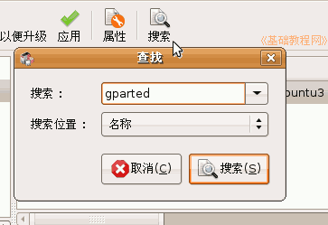
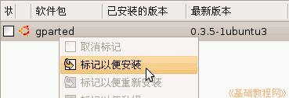
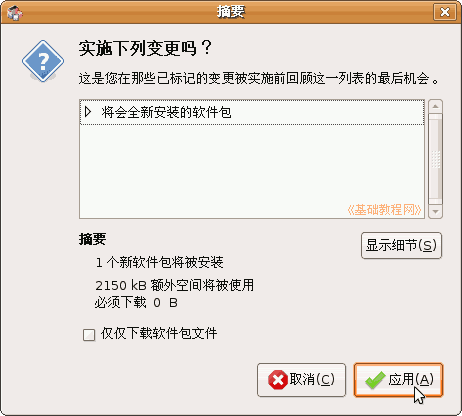
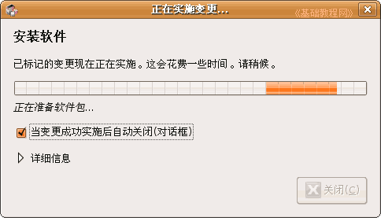
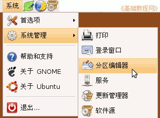
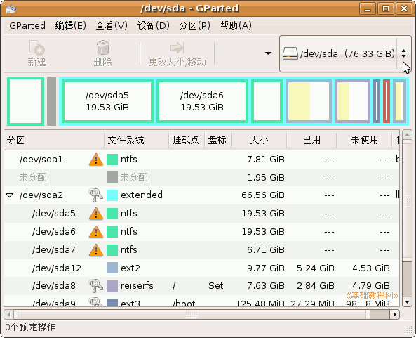
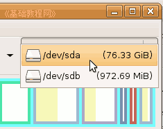
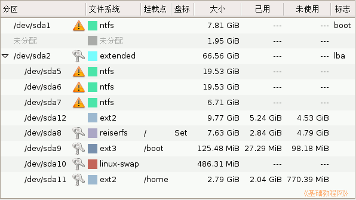

Gparted 分区编辑器基础
作者：TeliuTe 来源：基础教程网
一、安装和运行 返回目录 下一课在Ubuntu中可以使用 Gparted 分区编辑器，调整分区和格式化，下面我们来看一个练习；
1、安装Gparted
1）点菜单“系统－系统管理－新立得软件包管理器”，进入后点工具栏上的搜索按钮，输入 gparted 点“搜索”；

2）稍等列表中出来一项，瞄准点右键，选择“标记以便安装”；

3）然后再点工具栏上的“应用”按钮，出来一个面板提示即将安装软件包；

4）点“应用”按钮，开始安装软件包，稍等安装好以后，点“关闭”按钮完成，然后关闭新立得；

2、启动分区编辑器
1）点菜单“系统－系统工具－分区编辑器”，打开分区编辑器窗口，
如果是live cd 则是“System－系统工具－Gparted”；

2）输入自己的密码后，进入后稍等出现磁盘的分区情况；

3）右上角表示系统中的硬盘数，也可以显示移动磁盘，点击可以切换到下一个磁盘；

4）下面的彩色条显示各个分区大小，对应下面列表中的字母名称，
最大化窗口可以显示里面更多的信息；
5）下面的列表是各个分区的详细信息，包括分区名称，文件系统（分区类型），挂载点，容量大小等；

6）主分区从 /dev/sda1 到sda4，最多只能有四个，这儿的 /dev/sda2 是扩展分区，也算在这里面，
后面的 /dev/sda5 开始是逻辑分区，包含在扩展分区内，数量不限；
7）钥匙表示锁定了，或者是挂载了已经，在操作前需要解锁；
这儿看看即可，不要进行操作，学习一下磁盘的分区知识，然后关闭窗口退出；
本节学习了在Ubuntu中安装分区编辑器的基本操作，如果你成功地完成了练习，请继续学习下一课内容；本教程由86团学校TeliuTe制作|著作权所有
基础教程网：http://teliute.org/
美丽的校园……
转载和引用本站内容，请保留版权信息和本站链接。